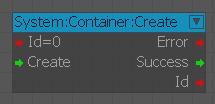
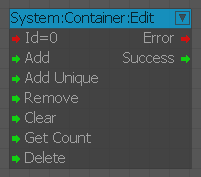
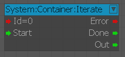

Контейнерные узлы
Создать
Используется для создания контейнера.

Входы
| Порт | Тип | Описание |
|---|---|---|
| идентификатор | Целое число | Контейнер ID |
| Создать | Любой | Создает контейнер |
Выходы
| Порт | Тип | Описание |
|---|---|---|
| Ошибка | Целое число | Срабатывает при возникновении ошибки |
| Успех | Любой | Тигры при создании контейнера |
| идентификатор | Целое число | Выводит контейнер ID |
Редактировать
Используется для редактирования контейнера.

Входы
| Порт | Тип | Описание |
|---|---|---|
| идентификатор | Целое число | Контейнер ID |
| Добавить | Любой | Добавляет переданный элемент в контейнер |
| AddUnique | Любой | Добавляет переданный элемент, если он не существовал. |
| Удалить | Любой | Удаляет все вхождения текущего элемента |
| Очистить | Любой | Опустошает контейнер |
| GetCount | Любой | Получает количество элементов в контейнере |
| Удалить | Любой | Удаляет контейнер |
Выходы
| Порт | Тип | Описание |
|---|---|---|
| Ошибка | Целое число | Срабатывает при возникновении ошибки |
| Успех | Любой | Срабатывает при успешном завершении операции |
Итерировать
Используется для перебора контейнера.

Входы
| Порт | Тип | Описание |
|---|---|---|
| идентификатор | Целое число | Контейнер ID |
| Старт | Любой | Начинает итерацию контейнера |
Выходы
| Порт | Тип | Описание |
|---|---|---|
| Ошибка | Целое число | Срабатывает при возникновении ошибки |
| Готово | Любой | Срабатывает при успешном завершении операции |
| Выход | Любой | Выводит контейнер ID |